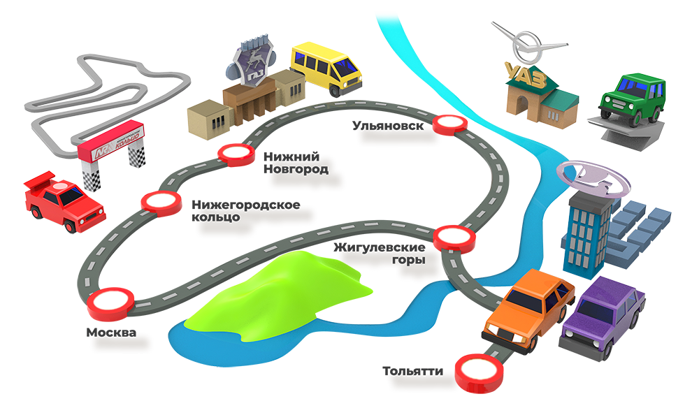

Мы приглашаем вас в автомобильное путешествие вместе с нашей командой. Пробег стартует 14 июня в Москве, и за следующие шесть дней мы проедем примерно 2500 км через Нижний Новгород, Ульяновск и Тольятти.
Мы назвали эту экспедицию «Золотое кольцо АР» — то есть «Золотое кольцо автопрома России», — потому что она пройдет через культовые места: ГАЗ, УАЗ и ВАЗ. Три завода, шесть дней и полный бак впечатлений.
И мы не просто покатаемся между городами, мы вместе с вами попадем туда, куда невозможно попасть обычному путешественнику. Вы когда-нибудь гуляли вдоль конвейера, на котором собирают Ниву? А видели, как сваривают Газели или как «женят» кузов Патриота с его рамой? Если нет, то присоединяйтесь. Это стоит увидеть.
Но заводы лишь половина нашего маршрута. Все-таки «Золотое кольцо» — это автомобильное путешествие, то есть дороги и новые ездовые впечатления. Вас ждет ринг-такси на автодроме «Нижегородское кольцо» и тест-драйв редчайших классических Жигулей в Тольятти. И, конечно, сотни километров по красивейшим — и свободным — дорогам вдоль Волги и через Жигулевские горы.
Это не совсем классическая экспедиция Авторевю. В том плане, что мы не будем проезжать по тысяче километров в день, ночевать в машинах и заставлять вас написать статью через три дня после финиша. Вы узнаете, как мы проводим наши экспедиции, но все-таки это будет не работа. Это автомобильные каникулы, где погружение в атмосферу автопрома будет соседствовать с хорошим отдыхом. Классные отели и еда, СПА, барбекю, горные прогулки и вечера на берегу Волги — все это тоже входит в программу.
14—19 июня 2021
Три завода, шесть дней, полный бак впечатлений
Ринг-такси на «Нижегородском кольце»
Прогулка по конвейеру: ВАЗ, ГАЗ и УАЗ
Ретро-драйв на первых автомобилях ВАЗ
Все включено: питание, проживание, СПА и экскурсии
от 75 000
КупитьСбор в г. Петушки (123-й км трассы M7), обед в ресторане
Брифинг
Выезд в Нижний Новгород
Прибытие на автодром «Нижегородское кольцо» (г. Богородск) не позже 16:00
Ринг-такси
Заселение в отель автодрома
Ужин и сауна
Завтрак в отеле
Выезд в Нижний Новгород и прибытие на ГАЗ
Экскурсия по автозаводу (цех сварки и главный конвейер)
Обед в историческом ресторане «Чайка»
Выезд в Ульяновск
Прибытие в Ульяновск
Заселение в отель Radisson
Ужин в отеле
Завтрак в отеле
Выезд на УАЗ
Экскурсия по автозаводу (сборочный конвейер) и заводскому музею
Обед в заводской столовой
Знакомство с новыми УАЗами
Возвращение в отель
Ужин в отеле
Завтрак в отеле
Автопрогулка по Президентскому мосту через Волгу (5,8 км) и фотосессия колонны
Выезд в сторону Тольятти
Посещение смотровой площадки в парке «Сенгилеевские горы», вид на Волгу с вершины горы, фотосессия
Обед на летней кухне с видом на Волгу
Выезд в сторону Сызрани
Прибытие в Самарскую Луку, подъем на гору Стрельная, посещение пещер
Прибытие в Тольятти
Заселение в отель «Лада-Резорт»
Ужин в отеле, СПА
Завтрак в отеле
Выезд в музей АВТОВАЗа, экскурсия по музею
Выезд в штаб-квартиру АВТОВАЗа, подъем на панорамную смотровую площадку с видом на завод и Тольятти
Обед в ресторане с панорамным видом на АВТОВАЗ
Экскурсия по автозаводу (главный конвейер, линия B0 и линия Нивы)
Выезд в сквер 50-летия Тольятти (инсталляция «Первый автомобиль» и экспозиция к 45-летию ВАЗ-2103)
Посещение технического музея имени Сахарова, обзорный тур
Тест-драйв исторических автомобилей ВАЗ-2101, ВАЗ-2102, ВАЗ-2103, ВАЗ-2109 и ВАЗ-2108 Кабрио на картодроме музейного комплекса
Возвращение в отель
Гала-ужин на берегу Волги в мангальной зоне отеля
Завтрак в отеле
Конец программы, выезд из Тольятти в свободном режиме
Старт — 14 июня. Это нерабочий понедельник после праздника 12 июня. Дальше — короткая рабочая неделя из четырех дней. Дело в том, что попасть на заводы можно только в будни, поэтому мы выбрали сокращенную неделю, чтобы вы пропустили как можно меньше рабочих дней. Подробная программа здесь, но если коротко, то план такой:
14 июня — утром стартуем по трассе М7 (точка сбора в Петушках), покатушки на «Нижегородском кольце» и отдых;
15 июня — экскурсия на ГАЗ, обед в историческом ресторане Чайка и выезд в Ульяновск;
16 июня — экскурсия на УАЗ и в музей, закрытый для частного посещения, знакомство с новыми УАЗами;
17 июня — переезд в Тольятти через Сенгилеевские и Жигулевские горы, отдых в отеле на берегу водохранилища;
18 июня — экскурсия на АВТОВАЗ и в заводской музей, тест-драйв исторических Жигулей;
19 июня — конец программы, возвращение домой.
Сначала в клубном и очень колоритном отеле автодрома «Нижегородское кольцо», который, помимо соседства с треком, предлагает СПА-программу в собственном коттеджном комплексе. В Ульяновске нас ждет гостиница Radisson, а в Тольятти — четырехзвездочный комплекс Лада-Резорт. Питание на том же уровне — завтрак, обед и ужин в каждой точке маршрута.
Пожалуй, самый важный вопрос. Ехать нужно на своем автомобиле. Мы верим, что однажды предложим вам специальные экспедиционные автомобили, но для старта мы выбрали иной формат. Он самый простой и надежный для вас и для нас. Вы едете на машине, которую знаете лучше всего на свете и о которой заботитесь лучше всего на свете, а мы выступим лидерами каравана на редакционном автомобиле-техничке, где будет все необходимое для вашего комфортного и безопасного путешествия. Это снимет все неудобные вопросы по поводу сохранности машин, ответственности за их техническое состояние, дисциплины на дорогах и формирования экипажей. Свою машину ведете только вы, и вы сами решаете, кому ее доверять. И кого взять в попутчики, тоже решаете только вы. Проще говоря, с вас — исправный автомобиль и разумное вождение, с нас — все остальное, включая радиосвязь с экипажами, навигацию по маршруту, подсказки о дорожной обстановке, ремкомплекты для шин, наборы для первой техпомощи и, конечно же, запас интересных фактов и историй на каждый километр пробега.
В нашей экспедиции максимум 15 участников — два авторевюшника, фотограф и двенадцать путешественников. Первый пробег возглавят Константин Сорокин и Сергей Знаемский. Количество автомобилей зависит от вас — можно поехать одному в своей машине, можно вдвоем, а можно взять с собой семью или друзей. Ограничений по количеству машин и по количеству путешественников в каждой у нас нет. Мы считаем только людей — максимум 12.
Нет. Нам тоже очень хочется показать все это отпрыскам, но, к сожалению, мы не сможем взять с собой несовершеннолетних. Все очень просто: нормы безопасности автозаводов запрещают допуск детей на действующее производство, и нам кажется, что это правильно.
Чтобы присоединиться к экспедиции, нужно забронировать место и оплатить его. Да, пробег не бесплатный, но по-другому не получается, потому что мы взяли на себя все хлопоты по организации маршрута, питания, отдыха и впечатлений. Вам остается только выбрать, сколько человек будет в вашем экипаже и какое размещение вы предпочитаете в отелях — одноместное или двухместное.
Цена при одноместном размещении во всех отелях — 90 тысяч рублей за одного участника.
Цена при двухместном размещении во всех отелях — 75 тысяч за каждого участника.
В нашем путешествии шесть дней и пять ночей. То есть каждая ночь обходится максимум в 18 тысяч рублей. Если задуматься, то это вполне адекватная сумма за почти недельное приключение, в котором вас ждут:
— ежедневные экскурсии в места, куда почти нереально попасть самостоятельно;
— ездовая программа и водительские впечатления, недоступные в иных обстоятельствах;
— трехразовое питание и отдых в одном трехзвездочном и двух четырехзвездочных отелях;
— СПА-программы и отдых на природе;
— интересная компания 24 часа в сутки.
Нам кажется, оно того стоит. А может, даже и большего. Но мы решили, что для первой экспедиции условия будут именно такими. Это промоцена для первых двенадцати участников — самых решительных и увлеченных.
Мы стремились сделать программу по принципу all inclusive, чтобы вас почти не волновала «бытовуха». И вот что мы включили в базовую комплектацию:
14 июня — завтрак в кафе, комплексный обед в ресторане, ужин в ресторане автодрома, ринг-такси, сауна;
15 июня — завтрак в отеле, экскурсия на ГАЗ, бизнес-ланч в ресторане, ужин в отеле;
16 июня — завтрак в отеле, экскурсия на УАЗ, обед в заводской столовой, тест-драйв, ужин в ресторане отеля;
17 июня — завтрак в отеле, обед на летней террасе над Волгой, посещение Жигулевских гор, ужин в отеле, бассейн, сауна, тренажерный зал;
18 июня — завтрак в отеле, экскурсия в музей АВТОВАЗа и на производство, обед в высотном ресторане с видом на завод, посещение технического музея под открытым небом, тест-драйв исторических автомобилей ВАЗ, гала-ужин в отеле;
19 июня — завтрак в отеле.
Кроме того, доступны опции с доплатой на месте. Например, трек-сессии на автодроме на собственном автомобиле, картинг в Тольятти и многое другое.
Прежде всего топливо и административные штрафы. Платные дороги и платные парковки (хотя маршрут проложен в обход таких мест). Издержки на ремонт автомобилей. Страхование жизни и здоровья участников при поездках на личном автомобиле. Еда и напитки сверх комплексного трехразового питания. Алкоголь. Мини-бар и дополнительные услуги в отелях.
Самый простой способ — выбирать двухместное проживание и ехать парами. Помимо экономии на проживании, вы сэкономите еще и на топливе. При этом попутчики-пассажиры не будут обделены ездовой программой, включенной в путешествие: она предусмотрена для каждого участника.
Не обязательно. Теоретически, если вы оплатили участие, присоединиться к экспедиции можно в любой точке, но цена от этого, увы, не изменится. Как в театре — нельзя посмотреть только третий акт за треть цены. Цена в любом случае будет полной. Мы хотели, чтобы в первом пробеге у нас была максимально синхронная колонна. Но если вы живете ближе к Волге, чем к Москве, то разумно будет присоединиться к нам днем 14 июня на «Нижегородском кольце» до начала заездов. В этом случае вы пропустите только обед на пути из Москвы. Кстати, возвращаться вместе с нами в Москву 19 июня тоже не обязательно, наша общая программа заканчивается после завтрака в Тольятти — и уже оттуда можно ехать домой.
Он не входит в наши планы, поэтому мы будем максимально осторожны и внимательны к тем требованиям, которые действуют на объектах нашей программы. Если завод, музей или отель попросят надеть перчатки и маски — наденем. Если ресторан соблюдает правила социальной дистанции — рассядемся. В СПА-комплексах и во время тест-драйвов тоже выполняем действующие антивирусные требования. Но у нас на маршруте нет таких мест, где необходимы паспорта вакцинации или справки об отрицательном тесте, так что мы тоже не требуем от вас этих документов. В своем автомобиле и в своем номере вы сами определяете безопасный режим общения и соседствуете только с тем, кого знаете и кому доверяете, — это еще один плюс путешествия на собственном автомобиле.
Мы не маркетологи и не проводили рыночных исследований, поэтому у нас нет четкого плана. Если желающих будет больше, чем мест, мы, скорее всего, организуем еще одну экспедицию в другие даты. Так что оставляйте заявки, даже если бронирование уже закрылось. Это поможет нам понять количество потенциальных участников и спланировать новые пробеги.